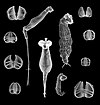

bdelloidea

Definition: Bdelloidea (Greek βδέλλα, bdella, "leech") is a class of rotifers found in freshwater habitats all over the world. There are over 450 described species of bdelloid rotifers (or 'bdelloids'), distinguished from each other mainly on the basis of morphology. The main characteristics that distinguish bdelloids from related groups of rotifers are exclusively parthenogenetic reproduction and the ability to survive in dry, harsh environments by entering a state of desiccation-induced dormancy (anhydrobiosis) at any life stage. They are often referred to as "ancient asexuals" due to their unique asexual history that spans back to over 25 million years ago through fossil evidence. Bdelloid rotifers are microscopic organisms, typically between 150 and 700 µm in length. Most are slightly too small to be seen with the naked eye, but appear as tiny white dots through even a weak hand lens, especially in bright light. In June 2021, biologists reported the restoration of bdelloid rotifers after being frozen for 24,000 years in the Siberian permafrost.
Source: Wikipedia
Wikipedia Page (Something wrong with this association? Let us know.)
Wikidata Page (Something wrong with this association? Let us know.)